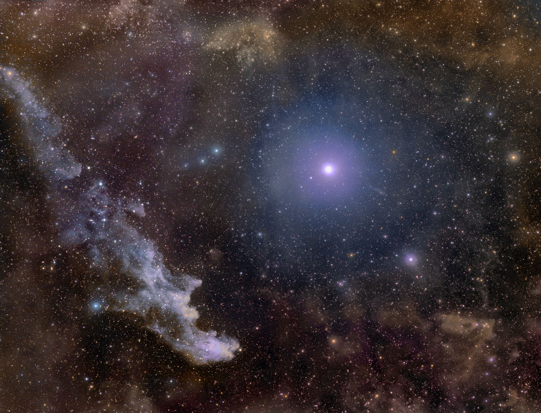
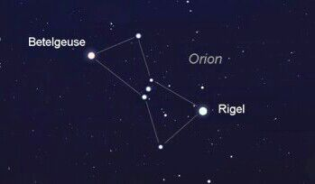

Rigil

Rígel está além do alcance atual de medidas precisas de paralaxe. Estudos espectroscópicos estimam uma distância entre 700 e
900 anos-luz (210 a 280 parsecs), enquanto o "melhor palpite" da sonda Hipparcos é 773 anos-luz (237 parsecs), com uma margem
de erro de 19%. Rígel é uma supergigante azul de 18 massas solares, e tem cerca de 85 000 vezes a luminosidade solar.[3] Rígel é
a estrela mais luminosa na região do Sol na Via Láctea, e
é tão luminosa que se fosse vista a uma distância de uma UA, ela teria um diâmetro angular de 35° e a sua magnitude aparente seria -38.

Rigel é a estrela mais brilhante na constelação de Orionte. Está classificada como a sétima estrela mais brilhante no céu noturno.
Curiosamente, Rigel tem apenas 10 milhões de anos de idade, por comparação com o nosso Sol, que tem 4,5 mil milhões de anos
O nome mais formal para Rigel é Beta Orionis, enquanto Betelgeuse ganhou o título científico de Alpha Orionis. Sendo a supergigante
azul mais brilhante do céu,
sua luminosidade obscurece uma de suas características mais interessantes – as outras estrelas que compõem esse sistema múltiplo de es
trelas
Desenvolvedoras:
MARIA LUIZA GONÇALVES PEREIRA
NICOLY RILLARY BRITO DA SILVA